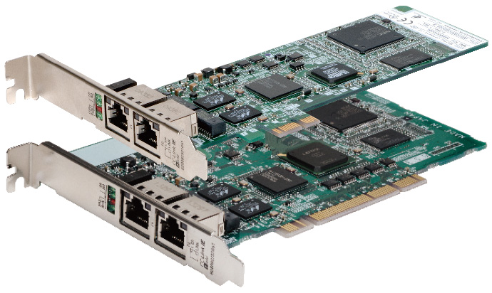
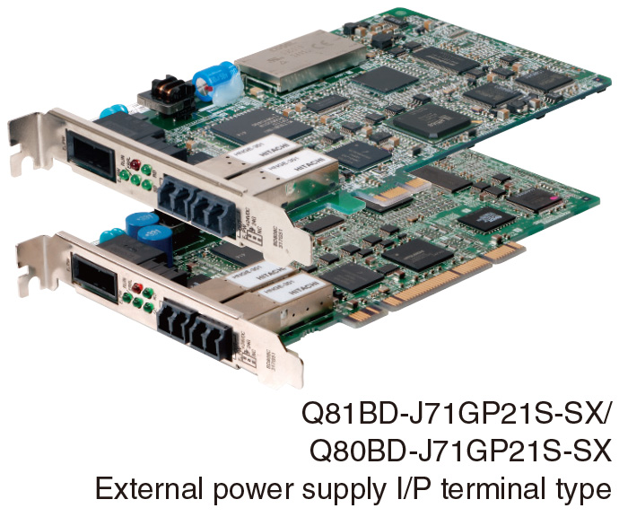
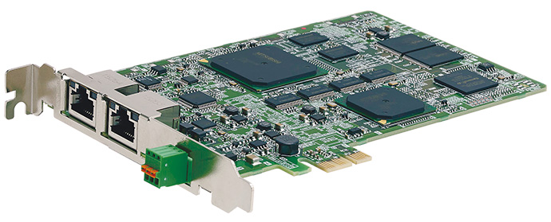

Network-related products |
Programmable Controllers MELSEC
CC-Link IE Line Up


Network Interface Boards
CC-Link IE Field Network interface boards
PCI Express® bus type
PCI/PCI-X bus type
- These interface boards connect computers or controllers supporting PCI Express®/PCI/PCI-X interface to CC-Link IE Field Network
- Can be used as either a CC-Link IE Field Network master or local station*1
- *1.The sub-master function and motion function are not supported.

CC-Link IE Controller Network interface boards
PCI Express® bus type
PCI/PCI-X bus type
- These interface boards connect computers or controllers supporting PCI Express®/PCI/PCI-X interface to CC-Link IE Controller Network
- Can be used as either a CC-Link IE Controller Network control or normal station
- An interface board including external power supply input terminals maintains communication in the event that the computer loses power

CC-Link IE Field Network simple motion board
PCI Express® bus type
- Performs control of high-speed I/O and motion in one network, and provides a suitable system layout with highly flexible wiring
- Can be used as a CC-Link IE Field Network master station*2
- Combined with a computer, the board performs advanced motion control such as positioning, synchronous, and cam control with C++ programming (event-driven programs with interrupts are also supported)
- *2.The local, sub-master, and safety communication functions are not supported.

Network interface board operation environment
| Item | Q81BD-J71GF11-T2 | Q80BD-J71GF11-T2 | Q81BD-J71GP21-SX/ Q81BD-J71GP21S-SX |
Q80BD-J71GP21-SX/ Q80BD-J71GP21S-SX |
MR-EM340GF |
|---|---|---|---|---|---|
| Personal computer | |||||
| Personal computer | Windows® supported personal computer | ||||
| CPU | System requirements of the operating system must be met | ||||
| Required memory | |||||
| Installation slot | PCI Express® x1, x4, x8, x16 slot (Standard/low profile, half size) |
PCI bus slot or PCI-X slot (Half size) |
PCI Express® x1, x2, x4, x8, x16 slot (Half size) |
PCI bus slot or PCI-X slot (Half size) |
PCI Express® x1, x2, x4, x8, x16 slot (Half size) |
| Bus specifications*3 | Compliant with PCI Express® standard Rev.1.1 |
Compliant with PCI standard Rev.2.2 |
Compliant with PCI Express® standard Rev.1.1 |
Compliant with PCI standard Rev.2.2 |
Compliant with PCI Express® standard Rev.2.0 |
| Operating system (English Version)*4 | |||||
| Microsoft® Windows Server® 2012 Standard |
● | ● | - | ||
| Microsoft® Windows Server® 2012 R2 Standard |
● | ● | - | ||
| Microsoft® Windows Server® 2016 Standard |
● | ● | - | ||
| Microsoft® Windows Server® 2019 Standard |
● | ● | - | ||
| Microsoft® Windows® 8.1 |
● | ● | - | ||
| Microsoft® Windows® 8.1 Pro |
● | ● | ● | ||
| Microsoft® Windows® 8.1 Enterprise |
● | ● | ● | ||
| Microsoft® Windows® 10 Home |
● | ● | - | ||
| Microsoft® Windows® 10 Pro |
● | ● | ● | ||
| Microsoft® Windows® 10 Enterprise |
● | ● | ● | ||
| Microsoft® Windows® 10 Education |
● | ● | - | ||
| Microsoft® Windows® 10 IoT LTSB 2016 |
● | ● | - | ||
| Microsoft® Windows® 10 IoT LTSC 2019 |
● | ● | - | ||
| Programming language (English Version)*4 | |||||
| Microsoft® Visual Studio® 2012 Visual Basic® |
● | ● | - | ||
| Microsoft® Visual Studio® 2013 Visual Basic® |
● | ● | - | ||
| Microsoft® Visual Studio® 2015 Visual Basic® |
● | ● | - | ||
| Microsoft® Visual Studio® 2012 Visual C++® |
● | ● | ● | ||
| Microsoft® Visual Studio® 2013 Visual C++® |
● | ● | ● | ||
| Microsoft® Visual Studio® 2015 Visual C++® |
● | ● | ● | ||
| Microsoft® Visual Studio® 2017 Visual C++® |
● | ● | - | ||
- *3.For the details on bus specifications, please refer to the relevant product manual.
- *4.For a combination of the operation system and the programming language, please refer to Microsoft Docs to check the system requirement of Visual Studio®.
For further details on operating environment and latest information, please refer to the relevant product manuals.